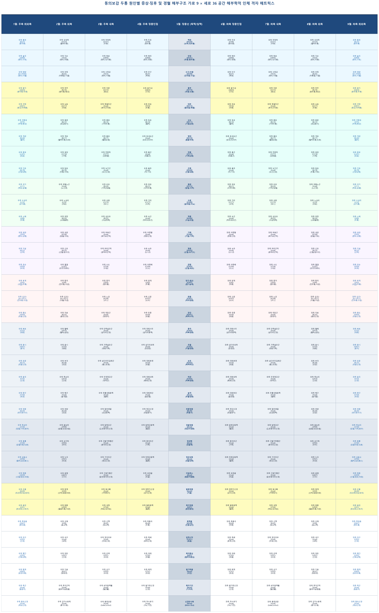
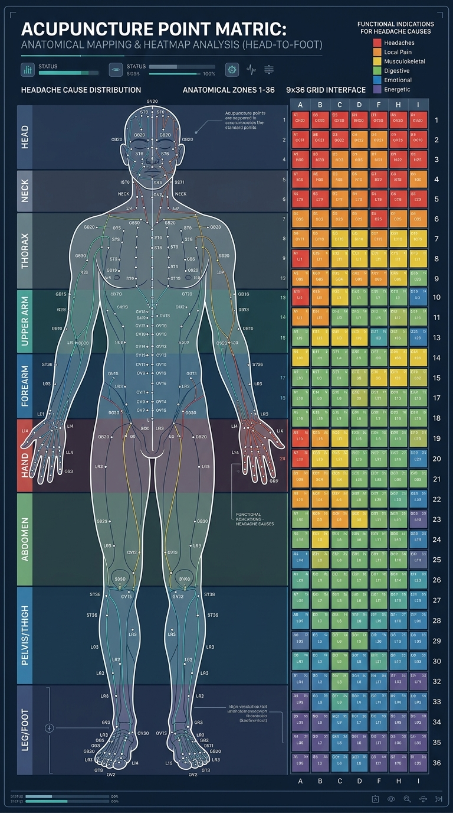

설계: 5열 정중선(독맥/임맥) · 1~4열(우측 경혈) · 6~9열(좌측 경혈) · 1~30행 체두 수직 분획 정밀 공간 매트릭스


| 행 구분 (Region Row) | 1열: 우측 최외측 | 2열: 우측 외측 | 3열: 우측 내측 | 4열: 우측 정중인접 | 5열: 정중선 (독맥/임맥) | 6열: 좌측 정중인접 | 7열: 좌측 내측 | 8열: 좌측 외측 | 9열: 좌측 최외측 |
|---|---|---|---|---|---|---|---|---|---|
| 행 1 (1~3행: 머리와 얼굴) | 우측 통천 [BL07] (풍두통) |
우측 상성측 [GV23] (혈허두통) |
우측 전정측 [GV21] (두풍) |
우측 두유 [ST08] (편두통) |
백회 [GV20] (뇌역/정두통) |
좌측 두유 [ST08] (편두통) |
좌측 전정측 [GV21] (두풍) |
좌측 상성측 [GV23] (혈허두통) |
좌측 통천 [BL07] (풍두통) |
| 행 2 (1~3행: 머리와 얼굴) | 우측 솔곡 [GB08] (편두/구토) |
우측 각손 [TE20] (편두/치통) |
우측 현로 [GB05] (편두/뇌각통) |
우측 현리 [GB06] (편두/면종) |
전정 [GV21] (두풍/풍두통) |
좌측 현리 [GB06] (편두/면종) |
좌측 현로 [GB05] (편두/뇌각통) |
좌측 각손 [TE20] (편두/치통) |
좌측 솔곡 [GB08] (편두/구토) |
| 행 3 (1~3행: 머리와 얼굴) | 우측 태양 [EX-HN05] (편두/사혈) |
우측 찬죽 [BL02] (미릉골/기궐) |
우측 사죽공 [TE23] (편두/사혈) |
우측 안구 [BL01] (목현) |
수구/인중 [GV26] (진두통/구급) |
좌측 안구 [BL01] (목현) |
좌측 사죽공 [TE23] (편두/사혈) |
좌측 찬죽 [BL02] (미릉골/기궐) |
좌측 태양 [EX-HN05] (편두/사혈) |
| 행 4 (4~5행: 목 부위) | 우측 풍지 [GB20] (풍두통/두풍) |
우측 천주 [BL10] (풍두통/항강) |
우측 아문 [GV15] (항강) |
우측 풍지내 [GB20] (目眩) |
풍부 [GV16] (두풍/뇌풍) |
좌측 풍지내 [GB20] (目眩) |
좌측 아문 [GV15] (항강) |
좌측 천주 [BL10] (풍두통/항강) |
좌측 풍지 [GB20] (풍두통/두풍) |
| 행 5 (4~5행: 목 부위) | 우측 견정 [GB21] (항강/어깨통) |
우측 뇌호 [GV17] (두풍) |
우측 목덜미근 [Anat] (후두근이완) |
우측 천유 [TE16] (두통) |
대추 [GV14] (열두통/해열) |
좌측 천유 [TE16] (두통) |
좌측 목덜미근 [Anat] (후두근이완) |
좌측 뇌호 [GV17] (두풍) |
좌측 견정 [GB21] (항강/어깨통) |
| 행 6 (6~9행: 어깨/가슴/등) | 우측 견중유 [SI15] (어깨/항강) |
우측 풍문 [BL12] (외감풍사) |
우측 폐유 [BL13] (기허두통) |
우측 독유 [BL16] (혈허) |
신도 [GV11] (기혈순환) |
좌측 독유 [BL16] (혈허) |
좌측 폐유 [BL13] (기허두통) |
좌측 풍문 [BL12] (외감풍사) |
좌측 견중유 [SI15] (어깨/항강) |
| 행 7 (6~9행: 어깨/가슴/등) | 우측 격관 [BL46] (혈어) |
우측 격유 [BL17] (혈허두통/刺痛) |
우측 흉유 [BL17] (혈회보법) |
우측 등세모근 [Anat] (승모근MTrP) |
영대 [GV10] (통통억제) |
좌측 등세모근 [Anat] (승모근MTrP) |
좌측 흉유 [BL17] (혈회보법) |
좌측 격유 [BL17] (혈허두통/刺痛) |
좌측 격관 [BL46] (혈어) |
| 행 8 (6~9행: 어깨/가슴/등) | 우측 중부 [LU01] (胸滿) |
우측 옥당 [CV18] (기체) |
우측 전중측 [CV17] (상충열) |
우측 흉근 [Anat] (대흉근) |
전중 [CV17] (기체상충) |
좌측 흉근 [Anat] (대흉근) |
좌측 전중측 [CV17] (상충열) |
좌측 옥당 [CV18] (기체) |
좌측 중부 [LU01] (胸滿) |
| 행 9 (6~9행: 어깨/가슴/등) | 우측 간유 [BL18] (간양상항) |
우측 담유 [BL19] (두통/구토) |
우측 늑간근 [Anat] (늑간신경) |
우측 흉추 [Anat] (T9-T10) |
근축 [GV08] (간풍내동) |
좌측 흉추 [Anat] (T9-T10) |
좌측 늑간근 [Anat] (늑간신경) |
좌측 담유 [BL19] (두통/구토) |
좌측 간유 [BL18] (간양상항) |
| 행 10 (10~12행: 윗배/위팔) | 우측 곡지 [LI11] (취포/습열) |
우측 위팔노근 [Anat] (노신경) |
우측 비유 [BL20] (기허/담궐) |
우측 위유 [BL21] (식적두통) |
중완 [CV12] (담궐/식적) |
좌측 위유 [BL21] (식적두통) |
좌측 비유 [BL20] (기허/담궐) |
좌측 위팔노근 [Anat] (노신경) |
좌측 곡지 [LI11] (취포/습열) |
| 행 11 (10~12행: 윗배/위팔) | 우측 수삼리 [LI10] (상지통) |
우측 노삼리 [LI10] (淸熱) |
우측 상완 [CV13] (嘔吐) |
우측 건리 [CV11] (식적) |
수분 [CV09] (습두통/이뇨) |
좌측 건리 [CV11] (식적) |
좌측 상완 [CV13] (嘔吐) |
좌측 노삼리 [LI10] (淸熱) |
좌측 수삼리 [LI10] (상지통) |
| 행 12 (10~12행: 윗배/위팔) | 우측 소해 [SI08] (두통) |
우측 위창 [BL50] (소화불량) |
우측 삼초유 [BL22] (수습정체) |
우측 요근 [Anat] (허리네모근) |
척중 [GV06] (수습조절) |
좌측 요근 [Anat] (허리네모근) |
좌측 삼초유 [BL22] (수습정체) |
좌측 위창 [BL50] (소화불량) |
좌측 소해 [SI08] (두통) |
| 행 13 (13~15행: 하복부/허리) | 우측 외관 [TE05] (편두/상충) |
우측 내관 [PC06] (담궐/구토) |
우측 하복근 [Anat] (배가로근막) |
우측 아랫팔 [Anat] (정중신경) |
기해 [CV06] (기궐/기허) |
좌측 아랫팔 [Anat] (정중신경) |
좌측 하복근 [Anat] (배가로근막) |
좌측 내관 [PC06] (담궐/구토) |
좌측 외관 [TE05] (편두/상충) |
| 행 14 (13~15행: 하복부/허리) | 우측 지실 [BL52] (신허) |
우측 신유 [BL23] (신궐/腦中空) |
우측 허리근막 [Anat] (등허리근막) |
우측 요추 [Anat] (L2-L3) |
명문 [GV04] (신궐/命門火) |
좌측 요추 [Anat] (L2-L3) |
좌측 허리근막 [Anat] (등허리근막) |
좌측 신유 [BL23] (신궐/腦中空) |
좌측 지실 [BL52] (신허) |
| 행 15 (13~15행: 하복부/허리) | 우측 공손 [SP04] (비위) |
우측 열결 [LU07] (頭項尋列缺) |
우측 수도 [ST28] (수습) |
우측 아랫배 [CV04] (培元) |
관원 [CV04] (신궐/培元) |
좌측 아랫배 [CV04] (培元) |
좌측 수도 [ST28] (수습) |
좌측 열결 [LU07] (頭項尋列缺) |
좌측 공손 [SP04] (비위) |
| 행 16 (16~18행: 골반/손목) | 우측 후계 [SI03] (項強/두통) |
우측 합곡 [LI04] (전두통/사관) |
우측 중저 [TE03] (편두통) |
우측 양계 [LI05] (두통) |
양구/음교 [CV07] (원기승제) |
좌측 양계 [LI05] (두통) |
좌측 중저 [TE03] (편두통) |
좌측 합곡 [LI04] (전두통/사관) |
좌측 후계 [SI03] (項強/두통) |
| 행 17 (16~18행: 골반/손목) | 우측 십선1 [EX-UE11] (진두통/구급) |
우측 십선2 [EX-UE11] (사혈/구급) |
우측 노궁 [PC08] (淸心) |
우측 신문 [HT07] (安神) |
회음 [CV01] (하극정중) |
좌측 신문 [HT07] (安神) |
좌측 노궁 [PC08] (淸心) |
좌측 십선2 [EX-UE11] (사혈/구급) |
좌측 십선1 [EX-UE11] (진두통/구급) |
| 행 18 (16~18행: 골반/손목) | 우측 환도 [GB30] (좌골신경) |
우측 차료 [BL32] (골반신경) |
우측 대둔근 [Anat] (엉덩이) |
우측 둔중 [Anat] (좌골) |
장강 [GV01] (독맥시작) |
좌측 둔중 [Anat] (좌골) |
좌측 대둔근 [Anat] (엉덩이) |
좌측 차료 [BL32] (골반신경) |
좌측 환도 [GB30] (좌골신경) |
| 행 19 (19~24행: 넙다리 부위) | 우측 복토 [ST32] (대퇴) |
우측 혈해 [SP10] (혈허/滋陰) |
우측 안쪽넓은근 [Anat] (넙다리신경) |
우측 대퇴사두 [Anat] (넙다리동맥) |
중극 [CV03] (하복정중) |
좌측 대퇴사두 [Anat] (넙다리동맥) |
좌측 안쪽넓은근 [Anat] (넙다리신경) |
좌측 혈해 [SP10] (혈허/滋陰) |
좌측 복토 [ST32] (대퇴) |
| 행 20 (19~24행: 넙다리 부위) | 우측 풍시 [GB31] (풍자) |
우측 음시 [ST33] (대퇴) |
우측 가쪽넓은근 [Anat] (대퇴가쪽) |
우측 넙다리외측 [Anat] (장경관) |
곡골 [CV02] (치골정중) |
좌측 넙다리외측 [Anat] (장경관) |
좌측 가쪽넓은근 [Anat] (대퇴가쪽) |
좌측 음시 [ST33] (대퇴) |
좌측 풍시 [GB31] (풍자) |
| 행 21 (19~24행: 넙다리 부위) | 우측 은문 [BL37] (좌골신경) |
우측 부극 [BL38] (오금) |
우측 넙다리두갈래근 [Anat] (햄스트링) |
우측 대퇴후면 [Anat] (좌골) |
요유 [GV02] (독맥하단) |
좌측 대퇴후면 [Anat] (좌골) |
좌측 넙다리두갈래근 [Anat] (햄스트링) |
좌측 부극 [BL38] (오금) |
좌측 은문 [BL37] (좌골신경) |
| 행 22 (19~24행: 넙다리 부위) | 우측 음곡 [KI10] (신경) |
우측 족오리 [LR10] (간경) |
우측 두덩정강근 [Anat] (내덕근) |
우측 대퇴내측 [Anat] (폐쇄신경) |
하관 [CV03] (하복정중) |
좌측 대퇴내측 [Anat] (폐쇄신경) |
좌측 두덩정강근 [Anat] (내덕근) |
좌측 족오리 [LR10] (간경) |
좌측 음곡 [KI10] (신경) |
| 행 23 (19~24행: 넙다리 부위) | 우측 량구 [ST34] (위경) |
우측 혜구 [Anat] (슬개골) |
우측 무릎내림동맥 [Anat] (혈류) |
우측 대퇴하단 [Anat] (슬관절) |
슬개 [Anat] (무릎정중) |
좌측 대퇴하단 [Anat] (슬관절) |
좌측 무릎내림동맥 [Anat] (혈류) |
좌측 혜구 [Anat] (슬개골) |
좌측 량구 [ST34] (위경) |
| 행 24 (19~24행: 넙다리 부위) | 우측 위중 [BL40] (腰背委中求) |
우측 위양 [BL39] (오금) |
우측 팝리테알 [Anat] (오금동맥) |
우측 정강신경 [Anat] (좌골분지) |
위중정중 [BL40] (위중구) |
좌측 정강신경 [Anat] (좌골분지) |
좌측 팝리테알 [Anat] (오금동맥) |
좌측 위양 [BL39] (오금) |
좌측 위중 [BL40] (腰背委中求) |
| 행 25 (25~28행: 무릎/정강) | 우측 족삼리 [ST36] (담궐/기허/健脾) |
우측 음능천 [SP09] (습열/頭重如裹) |
우측 앞정강근 [Anat] (깊은종아리신경) |
우측 앞정강동맥 [Anat] (혈관) |
경골정중 [Anat] (정강이정중) |
좌측 앞정강동맥 [Anat] (혈관) |
좌측 앞정강근 [Anat] (깊은종아리신경) |
좌측 음능천 [SP09] (습열/頭重如裹) |
좌측 족삼리 [ST36] (담궐/기허/健脾) |
| 행 26 (25~28행: 무릎/정강) | 우측 풍륭 [ST40] (담궐두통/眩暈) |
우측 상구측 [SP05] (脾胃) |
우측 긴발가락폄근 [Anat] (종아리신경) |
우측 종아리근 [Anat] (가쪽) |
정강뼈 [Anat] (경골체) |
좌측 종아리근 [Anat] (가쪽) |
좌측 긴발가락폄근 [Anat] (종아리신경) |
좌측 상구측 [SP05] (脾胃) |
좌측 풍륭 [ST40] (담궐두통/眩暈) |
| 행 27 (25~28행: 무릎/정강) | 우측 삼음교 [SP06] (혈허/滋陰養血) |
우측 누곡 [SP07] (비경) |
우측 가자미근 [Anat] (정강신경) |
우측 뒤정강동맥 [Anat] (혈류) |
정강내측 [Anat] (경골내측) |
좌측 뒤정강동맥 [Anat] (혈류) |
좌측 가자미근 [Anat] (정강신경) |
좌측 누곡 [SP07] (비경) |
좌측 삼음교 [SP06] (혈허/滋陰養血) |
| 행 28 (25~28행: 무릎/정강) | 우측 현종 [GB39] (신궐/髓會/補髓) |
우측 광명 [GB37] (目明) |
우측 긴엄지폄근 [Anat] (얕은종아리신경) |
우측 외경골 [Anat] (비골) |
아킬레스 [Anat] (발꿈치힘줄) |
좌측 외경골 [Anat] (비골) |
좌측 긴엄지폄근 [Anat] (얕은종아리신경) |
좌측 광명 [GB37] (目明) |
좌측 현종 [GB39] (신궐/髓會/補髓) |
| 행 29 (29~30행: 발목과 발) | 우측 곤륜 [BL60] (風頭痛如破/欲嘔) |
우측 태계 [KI03] (신허/腦髓空虛) |
우측 복사뼈 [Anat] (가쪽복사) |
우측 장딴지신경 [Anat] (감각신경) |
발목정중 [Anat] (거골) |
좌측 장딴지신경 [Anat] (감각신경) |
좌측 복사뼈 [Anat] (가쪽복사) |
좌측 태계 [KI03] (신허/腦髓空虛) |
좌측 곤륜 [BL60] (風頭痛如破/欲嘔) |
| 행 30 (29~30행: 발목과 발) | 우측 용천 [KI01] (厥頭痛/足暴淸) |
우측 태충 [LR03] (궐음두통/사관) |
우측 내정 [ST44] (취포/瀉胃熱) |
우측 발등동맥 [Anat] (혈류) |
족저정중 [KI01] (용천중앙) |
좌측 발등동맥 [Anat] (혈류) |
좌측 내정 [ST44] (취포/瀉胃熱) |
좌측 태충 [LR03] (궐음두통/사관) |
좌측 용천 [KI01] (厥頭痛/足暴淸) |
| 행 31 (31~36행: 해부 보완) | 우측 족임읍 [GB41] (편두통) |
우측 조해 [KI06] (음교맥) |
우측 신맥 [BL62] (양교맥) |
우측 족통곡 [BL66] (두통) |
독맥끝 [GV28] (인중상단) |
좌측 족통곡 [BL66] (두통) |
좌측 신맥 [BL62] (양교맥) |
좌측 조해 [KI06] (음교맥) |
좌측 족임읍 [GB41] (편두통) |
| 행 32 (31~36행: 해부 보완) | 우측 여구 [LR05] (간경) |
우측 내구 [Anat] (내측) |
우측 정강피부 [Anat] (두렁신경) |
우측 족배 [Anat] (등쪽신경) |
임맥시작 [CV01] (회음) |
좌측 족배 [Anat] (등쪽신경) |
좌측 정강피부 [Anat] (두렁신경) |
좌측 내구 [Anat] (내측) |
좌측 여구 [LR05] (간경) |
| 행 33 (31~36행: 해부 보완) | 우측 행간 [LR02] (간화상항) |
우측 대돈 [LR01] (간경) |
우측 은백 [SP01] (비경) |
우측 여태 [ST45] (위열) |
족저중심 [KI01] (발바닥중심) |
좌측 여태 [ST45] (위열) |
좌측 은백 [SP01] (비경) |
좌측 대돈 [LR01] (간경) |
좌측 행간 [LR02] (간화상항) |
| 행 34 (31~36행: 해부 보완) | 우측 협계 [GB43] (담경두통) |
우측 지음 [BL67] (방광경) |
우측 상구 [SP05] (비경) |
우측 해계 [ST41] (위경) |
발가락끝 [Anat] (지단) |
좌측 해계 [ST41] (위경) |
좌측 상구 [SP05] (비경) |
좌측 지음 [BL67] (방광경) |
좌측 협계 [GB43] (담경두통) |
| 행 35 (31~36행: 해부 보완) | 우측 족근 [Anat] (발꿈치) |
우측 족저근막 [Anat] (발바닥널힘줄) |
우측 바닥동맥활 [Anat] (혈관활) |
우측 발가락신경 [Anat] (신경) |
족저기지 [Anat] (기저부) |
좌측 발가락신경 [Anat] (신경) |
좌측 바닥동맥활 [Anat] (혈관활) |
좌측 족저근막 [Anat] (발바닥널힘줄) |
좌측 족근 [Anat] (발꿈치) |
| 행 36 (31~36행: 해부 보완) | 우측 말초신경 [Anat] (체성신경) |
우측 감각수용체 [Anat] (통각수용) |
우측 통증관문 [Anat] (GateControl) |
우측 척수후각 [Anat] (TNC기전) |
신경반사축 [Anat] (Brain-Gut) |
좌측 척수후각 [Anat] (TNC기전) |
좌측 통증관문 [Anat] (GateControl) |
좌측 감각수용체 [Anat] (통각수용) |
좌측 말초신경 [Anat] (체성신경) |